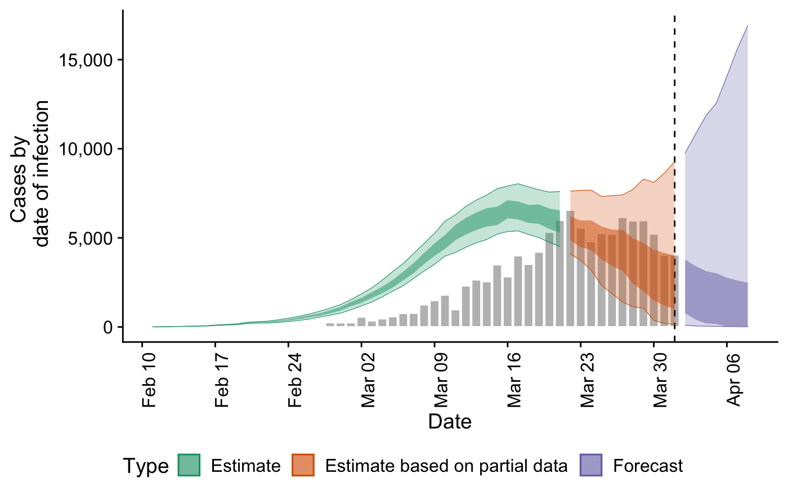
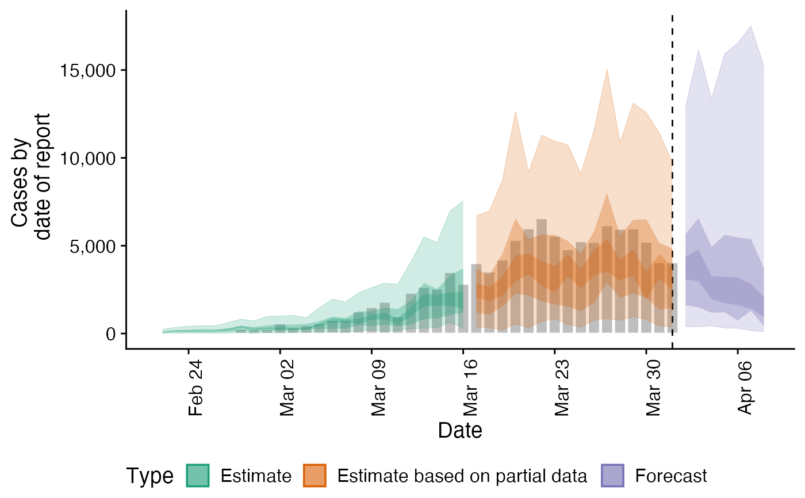
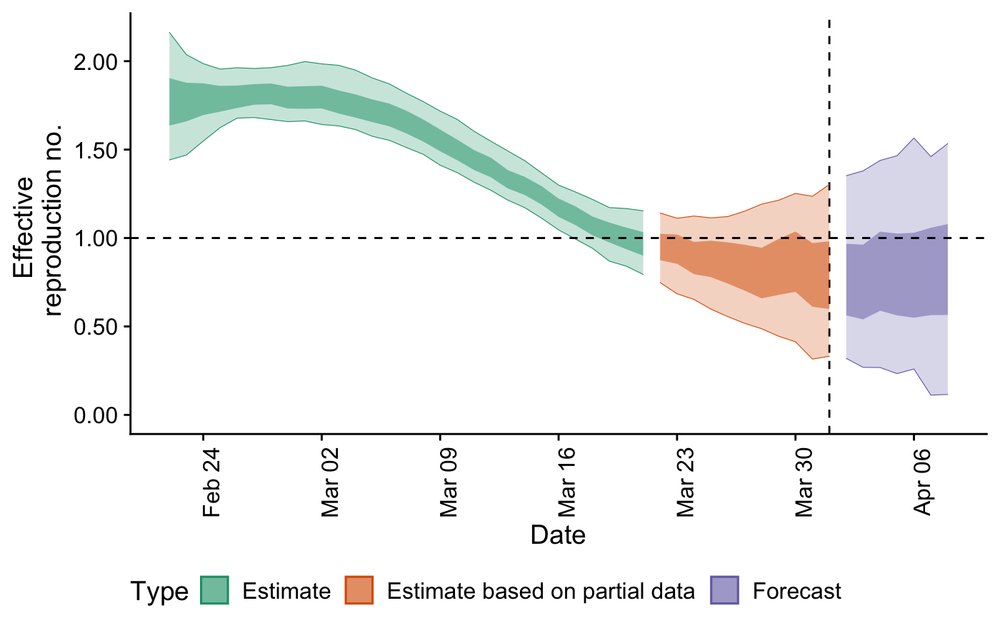
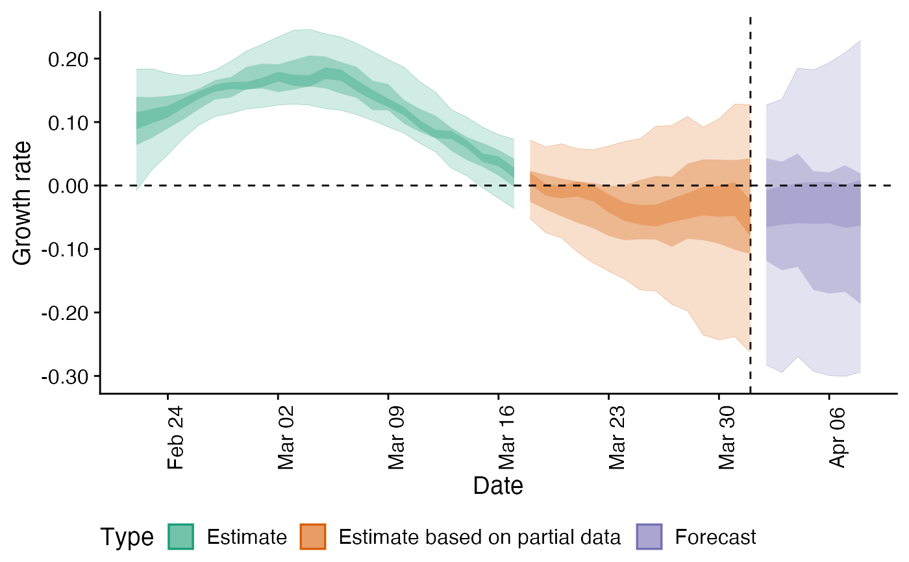
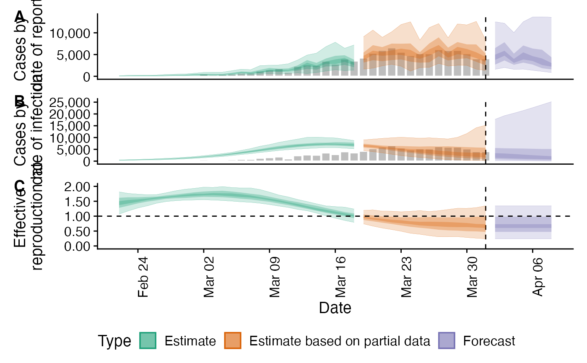

report_plots.RdReport plots
report_plots(summarised_estimates, reported, target_folder)
| summarised_estimates | A data.table of summarised estimates containing the following variables: variable, median, bottom, and top. It should contain the following estimates: R, infections, reported_cases_rt, and r (rate of growth). |
|---|---|
| reported | A data.table of reported cases with the following variables: date, confirm. |
| target_folder | Character string specifying where to save results (will create if not present). |
A ggplot2 object
# \donttest{ ## Define example cases cases <- EpiNow2::example_confirmed[1:40] ## Set up example generation time generation_time <- list(mean = EpiNow2::covid_generation_times[1, ]$mean, mean_sd = EpiNow2::covid_generation_times[1, ]$mean_sd, sd = EpiNow2::covid_generation_times[1, ]$sd, sd_sd = EpiNow2::covid_generation_times[1, ]$sd_sd, max = 30) ## Set incubation_period <- list(mean = EpiNow2::covid_incubation_period[1, ]$mean, mean_sd = EpiNow2::covid_incubation_period[1, ]$mean_sd, sd = EpiNow2::covid_incubation_period[1, ]$sd, sd_sd = EpiNow2::covid_incubation_period[1, ]$sd_sd, max = 30) reporting_delay <- list(mean = log(5), mean_sd = log(2), sd = log(2), sd_sd = log(1.5), max = 30) ## Run model out <- EpiNow2::estimate_infections(cases, family = "negbin", generation_time = generation_time, delays = list(incubation_period, reporting_delay), samples = 1000, warmup = 200, cores = 4, chains = 4, horizon = 7, estimate_rt = TRUE, verbose = TRUE)#> DEBUG [2020-08-14 17:42:57] Running for 1000 samples (across 4 chains each with a warm up of 200 iterations each) and 58 time steps of which 7 are a forecast#> Warning: Bulk Effective Samples Size (ESS) is too low, indicating posterior means and medians may be unreliable. #> Running the chains for more iterations may help. See #> http://mc-stan.org/misc/warnings.html#bulk-ess## Plot infections plots <- report_plots(summarised_estimates = out$summarised, reported = cases) plots#> $infections#> #> $reports#> #> $reff#> #> $growth_rate#> #> $summary#> Warning: Removed 1 rows containing missing values (geom_col).#> Warning: Removed 1 rows containing missing values (geom_col).#># }